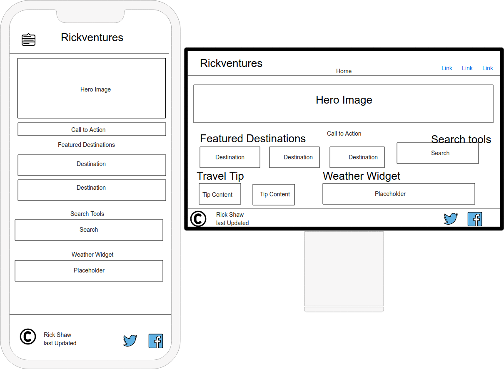

Site Name
Rickventures
This name combines my name, Rick, with the spirit of travel and adventure. It's simple, personal, and gives the site a fun and memorable identity while still being flexible enough to cover road trips, cruises, and international travel. It's a little bold, but part of the adventure is stepping out of my own comfort zone!
Site Purpose
The purpose of Rickventures is to share the places I've visited around the world—primarily through cruising and regional travel with my 5th wheel—in hopes of inspiring others to explore the world around them. I want to encourage curiosity and adventure by providing helpful stories, photos, and planning tools, including cruise and destination search features. Whether someone is planning a big international trip or a weekend getaway, I hope they'll find something here that gets them excited to travel.
- Where can I find cruise options and tips for a first-time cruiser?
- What are some must-see destinations for RV travel where you have visited
Color Schema
The Rickventures site uses a color palette inspired by nature, adventure and travel. The primary color is a teal green that feels comforting, calm and refreshing, while the deep bluish gray secondary color adds some contrast and structure. The warm yellow and coral-orange accents bring a bit of energy and a sense of exploration to the design. A softer cream background keeps the site feeling light and bright and more approachable. The hope would be to give the user a sense of comfort while on the site and one where they will want to come back to.
- Primary Color: #2a9d8f - Used for buttons, headings, and highlights
- Secondary Color: #264653 - Used for navigation bar background and section headers
- Accent Color 1: #e9c46a - Used for hover effects and call-to-action highlights
- Accent Color 2: #f4a261 - Used for icons, buttons, and link accents
- Background Color: #fefae0 - Used for the site background
- Text Color: #1e1e1e - Used for body text
Typography
The Rickventures site uses a combination of fonts that I hope reflect both a modern sense of adventure and a touch of storytelling charm. Montserrat is used for headings and navigation, providing a clean look that feels grounded and adds a bit of energy to the page. Lora is used for the body text, giving it a more classic feel that makes it easy to read through longer location descriptions and stories of my adventures.
- Heading Font: Montserrat - Used for all headings, navigation links, and callouts
- Paragraph Font: Lora - Used for all main body text and descriptions
Wireframes
Below is a basic wireframe layout for the Rickventures homepage for both mobile screens (min-width 320px) and larger screen views. The layour emphasizes a visual and interactive experience, with dynamic content like destination cards and some travel tools. The hero section provides the tone of the wite with a background image and a call-to-action button.
- Mobile View: Elements are stacked vertically for easy scrolling, with the hamburger menu for navigation and content sections following in a linear layout including animations from previous web pages in the WDD321 course.
- Desktop View: Navigation is fully visible, content is laid out in multiple columns (e.g., featured destinations, search tools), and visual elements like tips and weather can appear side-by-side.
